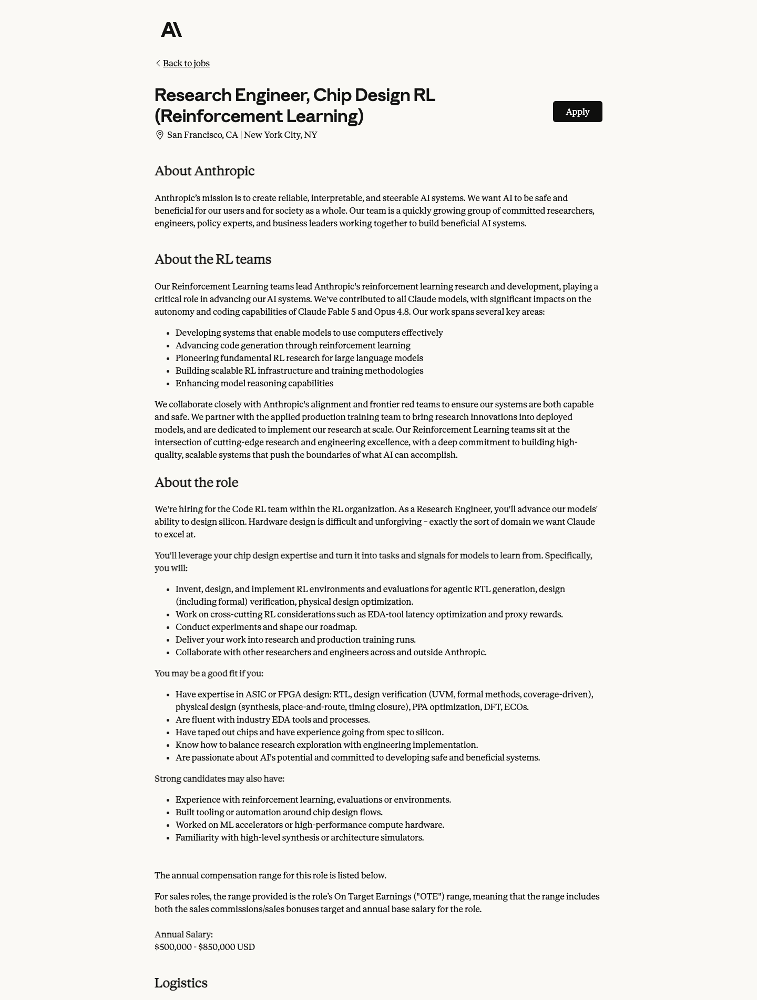
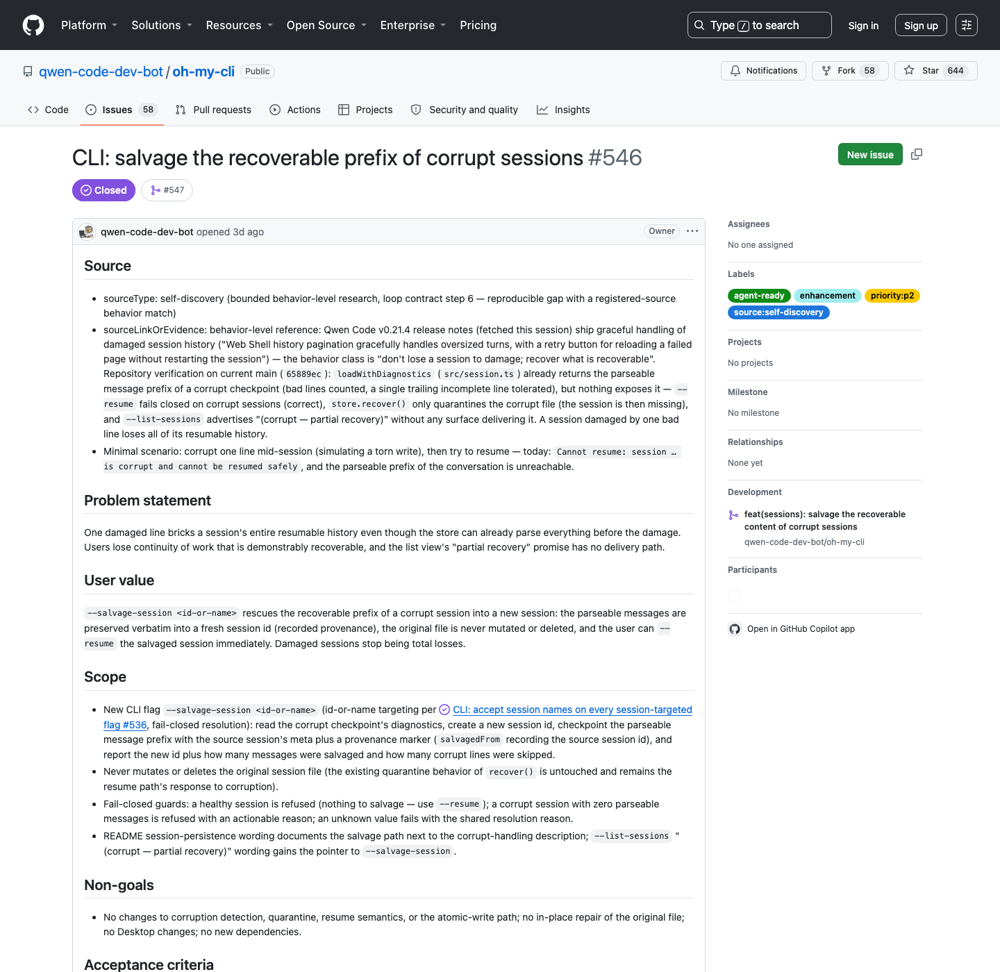
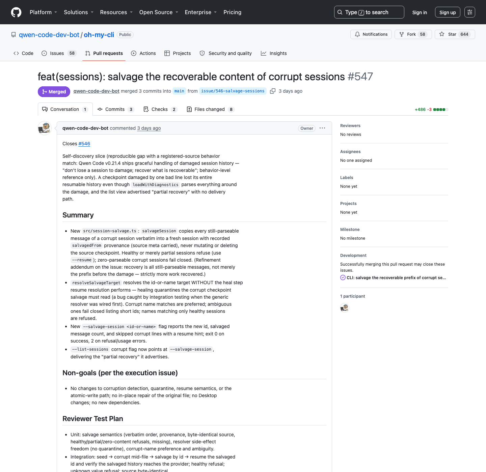

Appendix
Qwen3.8 세미나 부록 · ← 발표로 돌아가기 · 출처 페이지
A · Benchmark별 harness/평가 설정
| Benchmark (Qwen3.8-Max 점수) | Harness | N / timeout / 설정 | 비고 (각주 원문 근거) | 비교 성격 |
|---|---|---|---|---|
| Terminal Bench 2.1 (86.6) | Claude Code | avg@10, 5h timeout, max_tokens=131,072 | 타 모델은 "best published score across harnesses" (Opus4.8·Fable5는 Terminus 2, GPT-5.6 Sol은 Codex) | model+harness system — harness가 모델마다 다름 |
| SWE-bench Pro (67.7) | Claude Code | temp=1.0, top_p=0.95, 256K context | "problematic tasks corrected", 전 baseline을 수정판에서 재평가(in-house) | system (동일 harness, in-house 재평가) |
| DeepSWE 1.1 (56.6) | Claude Code + mini-SWE-agent | 둘 중 높은 점수 | "Qwen3.8-Max performs best on Claude Code" 명시 | system (best-of-harness) |
| NL2Repo-Bench (55.9) | Claude Code | — | reward hacking 방지 위해 pip install/git clone 등 차단 | system |
| FrontierSWE (73.5) | Claude Code | MEAN@5 | 타 모델은 공식 leaderboard(2026-08-03) 수치 | system — 평가 주체 혼재 |
| MLS-Bench-Lite (41.0) | Claude Code | 5h, max_tokens=131,072 | — | system |
| PaperBench (93.0) | BasicAgent, Code-Dev | avg@3, max 12h/run | judge = Claude Opus 4.6 | system + model judge |
| QwenSWEBench (80.7, in-house) | Claude Code | avg@3, 8h, max_tokens=32,768, temp=1.0, 256K | in-house | system, 비공개 벤치마크 |
| QwenQoderBench (58.4, in-house) | Claude Code | avg@5, 6h, max_tokens=32,768, temp=1.0, 256K | in-house (일부 검색 결과가 이 설정을 FrontierSWE로 오귀속 — 원문 확인으로 정정) | system, 비공개 |
| QwenReactBench (Elo 1724) / QwenSVGBench (1713) | Claude Code | auto-render + multimodal judge, BT/Elo | in-house, 한/영 병용 | system + visual judge |
| CoWorkBench (74.8) / WorkSpaceBench (67.7) / JobBench (53.4) | Fig 2: 5개 harness 병렬 | — | baseline 모델은 OpenClaw 단일(JobBench는 OpenCode)로만 평가 | cross-harness 실험 (단 baseline은 단일 harness) |
| SkillsBench (70.2, public v1.1) | Qwen: OpenCode / Opus·Fable: Claude Code / GPT: Codex | 87 tasks, avg@3 | 모두 in-house testing | system — harness 상이 |
| WideSearch (81.9) | Qwen: Qwen-Agent / 타 모델: Claude Code | item-F1, 4 runs | 자사만 다른 harness 사용 | system — 비교 가능성 제한 |
| Automation-Bench (27.3) | — | 600-task public subset | — | — |
| $OneMillion-Bench / PLawBench | — | — | judge = gemini-3.1-pro-preview | model judge 의존 |
| Vision2Web (69.0) | Claude Code | — | judge = gpt-5.4-2026-03-05 | system + model judge |
| RecreationBench (51.7, in-house) | Hybrid Agent | 5 platforms, black-box 관찰 | Fable5 56.1이 최고 — Qwen 열세 공개 | system, 비공개 |
| LVBench 81.8 / EgoLife (w/ Mem.) | — | — | "a memory system built with Qwen-MM-Plugins" 사용 | system — plugin이 평가에 개입 |
B · Model / Harness / Environment 책임 분리
| 능력/현상 | Model (weight) | Inference harness | RL environment |
|---|---|---|---|
| 다음 action 선택, tool 선택, 추론 | ✓ 핵심 | tool schema로 제약 | 학습 시 형성 |
| 500턴 동안 이력 유지 | context 내 참조 | ✓ compaction·external state·logs | — |
| 실패 후 재시도 | 정책적 판단(학습됨) | ✓ retry/recovery 로직·watchdog | 학습 시 실패 경험 제공 |
| 병렬 작업 분배 (oh-my-cli) | — | ✓ issue lease·dispatch | — |
| "어떤 일을 잘하는가"의 분포 | ✓ post-training 결과 | — | ✓ task/env 분포가 결정 |
| 정답 판정 | — | test 실행 결과 전달 | ✓ verifier·rubric·reward |
| token/time budget | — | ✓ 설정·강제 | ✓ termination policy |
| weight 업데이트 | 대상 | 일어나지 않음 | ✓ learner (training에서만) |
C · Universal reward · online balancing 상세 논점
Reward 구성에서 생기는 문제
- Normalization: 이종 task(코드 테스트 통과율 vs rubric 점수 vs 시각 평가)의 scale을 맞추지 않으면 특정 환경이 gradient를 지배한다.
- Binary + partial 결합: 최종 성공(binary)과 중간 진척(partial)을 어떻게 섞는지에 따라 탐색 행동이 달라진다. sparse reward만 있으면 long-horizon 학습이 어렵다.
- Deterministic verifier vs model judge: 전자는 정확하지만 커버리지가 좁고, 후자는 커버리지가 넓지만 bias·correlated error(judge와 policy가 유사 계열 모델일 때)가 생긴다. calibration 방법 미공개.
- Reward hacking: verifier가 environment 안의 코드라면 agent가 verifier를 수정·우회할 수 있다. evaluator 보호 방식 미공개. (oh-my-cli의 protected-paths workflow는 inference-time에서 유사 문제를 다루는 힌트)
- Visual artifact 평가의 reproducibility: rendering 환경·버전에 따라 같은 artifact가 다르게 보일 수 있다.
- 유지보수 비용: task-specific verifier는 정확하지만 환경 수에 비례해 사람 비용이 든다 — universal abstraction과의 trade-off.
Online balancing에서 생기는 문제
- 쉬운 task의 batch 독점 → 학습 신호는 많지만 정보량이 적다.
- 긴 task의 compute 독점 → rollout당 비용 편차가 크다.
- 성공률 ~0% task: 신호 없음. ~100% task: 배울 것 없음. 중간 난이도 유지가 곧 auto-curriculum이다 — 단, curriculum(순서 설계)과 balanced sampling(분포 유지)은 다른 개념.
- hard-example mining과의 관계, off-policy trajectory 재사용, 실패 trajectory 활용 방식: 모두 미공개.
- long-horizon credit assignment: 500턴 중 어느 결정이 보상에 기여했는가 — 공개된 방법 없음.
D · Coding agent ↔ Chip-design agent 대응
| Coding agent | Chip-design agent |
|---|---|
| Source code | RTL |
| Compiler/runtime | Icarus Verilog / Yosys |
| Unit test | cocotb test |
| Test failure | Simulation mismatch |
| Runtime performance | Cell count / PPA |
| Integration environment | OpenROAD flow |
| Deployment constraint | Timing / area / routing |
| CI success | Functional correctness + timing closure |
| Code patch | RTL / architecture modification |
E · EDA Glossary (AI 전문가용 최소 사전)
| 용어 | 뜻 | agent 관점 한 줄 |
|---|---|---|
| RTL (Register-Transfer Level) | 클록 단위 레지스터 간 데이터 이동으로 회로를 기술하는 추상화 수준. Verilog/VHDL로 작성 | agent가 편집하는 "소스 코드" |
| Icarus Verilog | 오픈소스 Verilog simulator | 인터프리터/런타임 |
| cocotb | Python 기반 HDL testbench 프레임워크 | pytest에 해당 |
| Synthesis (Yosys) | RTL을 gate-level netlist(표준 cell의 조합)로 변환 | 컴파일. cell count가 논리 면적 proxy |
| Standard cell | 미리 설계된 논리 primitive(NAND, FF 등)의 라이브러리 단위 | 컴파일 타깃의 instruction set |
| Nangate45 | 공개 연구·교육용 45nm standard-cell 라이브러리/PDK | 연습용 target platform — production 공정 아님 |
| OpenROAD | 오픈소스 physical implementation flow (floorplan→place→CTS→route) | 배포/통합 환경 |
| Floorplan / Placement / Routing | die 위에 블록·cell을 배치하고 배선 | 물리적 실현 단계 |
| CTS (Clock-Tree Synthesis) | 클록을 모든 FF에 균등 지연으로 분배하는 트리 합성 | — |
| STA (Static Timing Analysis) | 모든 경로의 타이밍을 정적으로 검사 | 성능 verifier |
| Timing slack | 목표 클록 대비 여유(+) 또는 위반(−) 시간 | 부호 있는 제약 신호. +0.66ns = 500MHz에서 통과 |
| PPA | Power / Performance / Area | multi-objective 평가 지표 |
| Timing closure | 모든 타이밍 제약 만족 상태 도달 | success condition |
| Sign-off | 제조 전 최종 검증(DRC/LVS/정밀 STA 등) | Qwen 사례는 여기 도달 안 함 |
| Tape-out | 최종 설계 데이터를 fab에 전달하는 시점 | Jalapeño는 도달, Qwen 사례는 아님 |
| FSM | Finite State Machine — 제어 로직의 상태 기계 | turn 60–113에서 pruning된 대상 |
| Bit-width trimming | 필요 이상의 데이터 폭을 줄여 논리 절감 | 불필요한 자료형 축소에 해당 |
F · Qwen-MM-Plugins 상세 (2026-08-07 기준)
저장소: github.com/QwenLM/Qwen-MM-Plugins · 생성 2026-07-29, 첫 공개 commit "init for release" 2026-08-03 (Qwen3.8-Max 발표에 맞춤) · Apache-2.0 · 98 stars, 4 forks, 15 commits, 4 contributors, 0 release · 외부 실사용 신고 issue 1건(Windows 경로 버그 #3)
uvx)." — architecture 그림에서는 Skill = "the brains", MCP server = "the hands".| Capability | 구성 | Tool 수 (확인치) | 비고 |
|---|---|---|---|
| core | skill + MCP | 14 (read_image/read_video/visualize + DashScope vision_chat·OCR·grounding·SAM3 segmentation·ASR + Serper web/image search) | API tool은 DASHSCOPE/SERPER key 필요, native 읽기는 keyless |
| video-memory | skill + MCP | query tool 9 | 4-level graph: Root→SuperEvent→MacroEvent→Subgraph. 30분+ 영상. (발표 시 "scene level" 표현은 부정확 — 실제 계층명은 위와 같음) |
| video-edit | skill + MCP | 생성 tool 5 (qwen_image, qwen_tts, wan_s2v, wan_t2v, happyhorse) | 편집 workflow는 skill이 주도 |
| blender | skill + MCP | 22 (공식 표기, 소스와 일치) | 실행 중인 Blender를 thin client로 제어. keyless |
| freecad | skill + MCP | 14 (공식 표기, 소스와 일치) | XML-RPC. STEP/STL, FEM(CalculiX). keyless |
| edu-agent | skill-only | — | MCP server 없음 확인. hyperframes+Qwen-TTS로 해설 영상 생성 |
지원 harness (공식 문서 확인): marketplace-native — Claude Code, Codex, Qoder, OpenClaw, Qwen Code (.claude-plugin/marketplace.json 방식) · 수동 skill+MCP 등록 — Gemini CLI(installer 자동화), opencode, pi(커뮤니티 pi-mcp-adapter 필요), QwenPaw 2.0.
종속성: DashScope API key가 API형 tool과 video-memory(구축·질의 모두)에 필요. "harness-agnostic"이지만 model-agnostic 주장은 없음 — API tool은 항상 DashScope 경유.
Qwen3.8과의 관계: 저장소에는 Qwen3.8·RL·RecreationBench 언급이 전혀 없음. 순수 inference-time 확장으로 제시됨. "이 plugin으로 RL 학습됐다"는 주장은 어디에도 없다.
G · Open questions 전체 목록
RL environment
- environment reset과 determinism은 어떻게 확보했는가?
- tool version과 dependency를 고정했는가?
- workspace state leakage를 어떻게 방지했는가?
- evaluator script 수정과 reward hacking을 어떻게 막았는가?
- environment failure와 agent failure를 어떻게 구분했는가?
Reward
- task 간 reward scale을 어떻게 normalize했는가?
- binary success와 partial reward를 어떻게 결합했는가?
- model judge와 executable verifier를 어떻게 calibration했는가?
- visual judge의 일관성은?
- invalid action에는 어떤 reward가 주어지는가?
Harness
- harness별 tool schema를 어떻게 normalize했는가?
- context compaction이 long-horizon 성능에 미치는 영향은?
- logs와 artifacts를 external memory로 사용하는가?
- retry policy는 model에 학습됐는가, scaffold에 구현됐는가?
- sub-agent orchestration 비용은?
- harness 자체의 contribution을 분리한 ablation이 있는가?
Evaluation
- 동일 model/task에서 harness만 바꾼 통제 실험이 있는가?
- harness별 timeout과 token budget이 같은가?
- avg@N과 best-of-N이 혼재하는가?
- multi-day 사례의 실패율은?
- 총 token, GPU, tool execution cost는?
- "human intervention 없음"의 정확한 정의는? (oh-my-cli의 경우: 사람은 governance·harness 규칙만 수정, 제품 코드는 미수정 — repo에서 확인됨)
- environment와 verifier 구축에 들어간 사람의 비용은?
Qwen-MM-Plugins
- native model vision과 plugin tool vision의 routing 기준은?
- dynamic resolution이 실제로 어떤 model/API에서 작동하는가?
- 다른 model provider에서도 동일하게 동작하는가?
- visual result를 누가 검증하는가?
- CAD semantic correctness를 어떻게 평가하는가?
- plugin이 커질수록 tool-selection complexity가 증가하지 않는가?
H · 예상 질문 10개와 답변 초안
| 예상 질문 | 답변 초안 |
|---|---|
| 1. 여러 harness에서 성능이 고르다는 게 정말 cross-harness generalization의 증거인가? | 두 해석이 모두 가능하다: (a) harness-invariant한 tool-use policy 학습, (b) 비교된 harness들이 비슷한 affordance(파일 편집, shell, retry)를 공유. 구분하려면 같은 model에 harness만 바꾼 통제 실험과 tool schema 차이가 큰 harness(예: GUI-only)에서의 평가가 필요한데, 둘 다 공개되지 않았다. |
| 2. Reward hacking은 어떻게 막았나? | 미공개. 일반적 방법은 verifier를 environment 밖(권한 분리)에 두고, agent inspector로 trajectory를 검사하는 것. Qwen이 agent inspection을 reward 스택에 포함한다고 서술한 것이 간접 신호이나 구체 메커니즘은 없다. oh-my-cli의 protected-paths CI가 inference-time 버전의 같은 문제의식을 보여준다. |
| 3. 500턴이면 context가 넘칠 텐데 어떻게 유지했나? | 공식 상세 미공개. 공개된 사실은 harness가 source·logs·metrics·평가 이력을 파일로 유지했고 model이 이를 재참조했다는 것 — 즉 context 전부가 아니라 workspace가 외부 memory 역할. compaction 정책은 harness 구현에 속하며 미공개. |
| 4. weight가 안 변하는데 왜 "self-evolution"인가? | 사례별로 (a) context 안에서 다음 action을 바꾸는 in-context adaptation(칩 500-turn, E-commerce 협상), 또는 (b) code·workflow 같은 외부 artifact 수정(oh-my-cli)을 가리키는 마케팅 표현으로 읽어야 한다. weight update는 training pipeline에서만 일어나며, 공개 데모 중 online weight update의 근거는 없다. |
| 5. 실패율과 비용은? 성공 사례만 보여준 것 아닌가? | 맞는 지적. multi-day 사례의 시도 횟수, 실패율, 총 token/GPU 비용은 모두 미공개다. 성공 사례 선택 편향의 가능성은 열려 있고, 발표에서도 "성공 사례만으로 전체 실패율을 알 수 없다"로 명시했다. |
| 6. oh-my-cli에서 사람 개입의 정확한 범위는? | repo에서 직접 확인됨: 사람 maintainer(qqqys, 13 commits)는 .autonomy/·workflow 등 governance만 수정, 제품 코드는 전부 bot commit. agent는 governance 변경을 issue(#498 등)로 제안하고 사람이 구현. "제품 개발 무개입, 규칙 관리는 사람"이 정확한 서술. |
| 7. Nangate45 결과가 실제 공정에서 의미가 있나? | 직접적 의미는 제한적 — 공개 45nm 교육용 라이브러리이고 sign-off/DRC/DFM이 없다. 의미는 "폐루프에서 agent가 물리 metric까지 최적화했다"는 workflow 구조의 실증이지, IP의 production 가치가 아니다. |
| 8. 500턴짜리 trajectory에서 credit assignment는 어떻게 하나? | 미공개. 공개 사례 자체는 RL 학습이 아니라 inference run이므로 credit assignment 문제가 없다. training에서 이런 길이의 trajectory를 쓴다면 turn-level advantage 추정이 필요한데, Qwen은 algorithm을 공개하지 않았다. |
| 9. Qwen-MM-Plugins는 다른 모델에서도 쓸 만한가? | 구조상 harness-agnostic(Claude Code·Codex 등 9개 harness 지원)이지만, API형 tool(OCR·segmentation·생성)과 video-memory는 DashScope key가 필수다. Blender/FreeCAD·native 읽기는 keyless. 타 모델에서의 성능 데이터는 없다. |
| 10. 그래서 우리가 얻을 교훈은 무엇인가? | 이 발표는 특정 도입안을 제안하지 않는다. 시스템적 교훈만 남긴다: 어떤 업무를 agent에 맡길 수 있는지는 "그 업무를 rollout·reward 가능한 environment로 만들 수 있는가"에 달려 있고, 그 environment(workspace·toolchain·verifier·reset)가 모델만큼 중요한 자산이 된다는 것. |
I · 사실 검증이 끝나지 않은 항목
- Qwen 논문 재현 사례의 독립 재현(제3자) — 미확인
- 칩 trajectory의 turn별 수치 — Qwen 공식 서술 외 원 artifact(로그) 접근 불가 시 Level 1에 머무름
- Qwen RL training의 algorithm·rollout 수·harness별 비율 — 미공개
- Jalapeño에서 AI가 담당한 설계 범위 — "parts of the design and optimization process" 한 구절 이상 미공개, technical report 대기
- Jalapeño 최종 성능 — 측정 진행 중(공식)
- Qwen-MM-Plugins의 제3자 채택·production 사용 — 9일 된 저장소, 외부 bug report 1건 수준
- RecreationBench — in-house 벤치마크로 공개 repo 없음
- oh-my-cli 8월 활동(일 52–87 commits)이 발표된 "16일 run"과 같은 조건인지 — 저장소만으로 불명
J · 원본 캡처 (전체 크기)
Anthropic — Research Engineer, Chip Design RL

원본 링크 · 2026-08-07 캡처 · Code RL team, SF/NYC, $500K–$850K
oh-my-cli — Issue #546 (전체 agent lifecycle)

원본 링크 · auto-triage → lease → 구현 → tmux E2E → CI 실패 감지·수정(b7ce6de) → lease 해제, 약 53분
oh-my-cli — PR #547 (code + test + CI)

원본 링크 · +486 lines / 8 files (테스트 325 lines 포함) · verify/protected-paths 통과